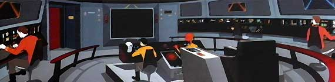
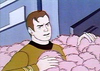

|
 ps
o cancelamento da srie original de Jornada nas Estrelas,
a NBC descobriu que o programa era um dos mais bem-sucedidos para
captar a audincia que a rede de TV buscava. Decidiu ento
tentar ressuscitar o seriado, mas desta vez em forma de desenho
animado. Essa verso de Jornada durou outras duas
temporadas e 22 episdios. Confira tudo sobre a histria da
srie clicando aqui. ps
o cancelamento da srie original de Jornada nas Estrelas,
a NBC descobriu que o programa era um dos mais bem-sucedidos para
captar a audincia que a rede de TV buscava. Decidiu ento
tentar ressuscitar o seriado, mas desta vez em forma de desenho
animado. Essa verso de Jornada durou outras duas
temporadas e 22 episdios. Confira tudo sobre a histria da
srie clicando aqui. |


|
Saiba tudo que h para saber sobre os 22 programas que compuseram a Srie Animada, com sinopse detalhada, comentrios, curiosidades, citaes e ficha tcnica, clicando aqui. |
 |
|
Confira o que o Trek Brasilis preparou de contedo especial sobre a verso animada de Jornada nas Estrelas!
Srie animada chega
ao mercado de DVDs |